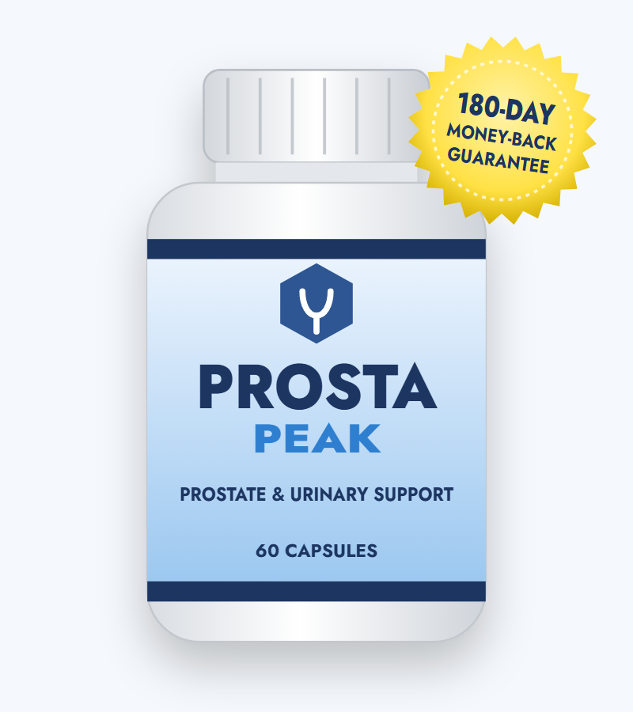
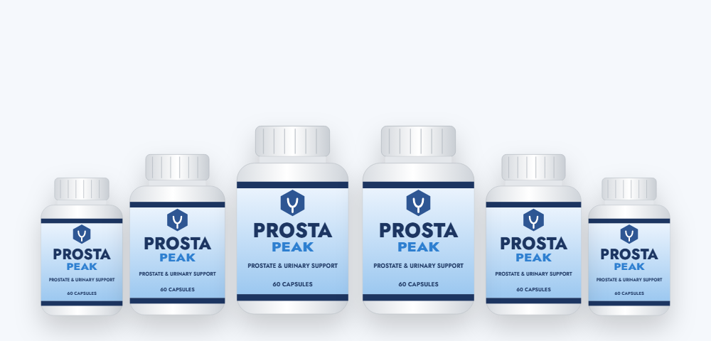

Hormone (DHT) Balance
Saw palmetto is thought to mildly reduce the conversion of testosterone to DHT, the hormone that drives prostate growth.*
An honest ProstaPeak review — what's inside, what the prostate research says, and how to buy Prosta Peak safely

ProstaPeak (also written Prosta Peak) is a capsule supplement marketed to men who want to support a healthy prostate, fewer nighttime bathroom trips and better energy. In this review we look at the ingredients the vendor names, what clinical research says about each, the possible side effects, and the current price and sale packages on the Prosta Peak official website.
The ProstaPeak supplement is a men's health formula sold online for "healthy prostate size and function." Each bottle holds 60 capsules and is sold as a one-month supply.
The vendor describes a "unique blend of 20+ ingredients and nutrients" and highlights six of them: saw palmetto, pygeum, green tea, raspberry, cat's claw and soursop. It also mentions a smaller "proprietary blend of 4 plants and minerals." The full supplement facts label and ingredient amounts are not shown on the sales page.
Prostate supplements like Prosta Peak are aimed at benign prostatic hyperplasia (BPH) — the non-cancerous enlargement of the prostate that affects about half of men in their 50s and most men over 70. BPH can squeeze the urethra and cause a weak stream, urgency and frequent nighttime urination.
To be clear: ProstaPeak is a supplement, not a treatment for BPH or any prostate disease, and urinary symptoms always deserve a check-up, because prostate cancer and infections can cause similar symptoms.
Based on its named ingredients, the formula aims at three areas.*
Saw palmetto is thought to mildly reduce the conversion of testosterone to DHT, the hormone that drives prostate growth.*
Pygeum, an African plum bark extract, has been studied for nighttime urination and urine flow.*
Green tea, raspberry, cat's claw and soursop provide plant antioxidants and are traditionally used for inflammation.*
Because the blend is proprietary, we don't know how much of each ingredient a serving of ProstaPeak provides. Studies of saw palmetto and pygeum used specific standardized extracts at known doses, so it isn't possible to tell whether ProstaPeak matches them.
These are the ingredients the vendor highlights for ProstaPeak. Check the supplement facts on your bottle for the full list.
The most popular prostate herb in the US. Typical studies use 320 mg a day of a standardized berry extract.*
Bark extract used in Europe for BPH symptoms; studies usually use 100–200 mg a day.*
Catechins such as EGCG are being studied for prostate health; evidence is still early.*
Provides ellagic acid and other polyphenols. There's little prostate-specific research.*
A South American vine used traditionally for inflammation and immunity.*
A tropical fruit and leaf used in folk medicine. Lab studies exist, but human evidence is lacking — and see the safety note below.*
Some third-party sites also list beta-sitosterol, zinc and boron for Prosta Peak. We couldn't confirm these on the vendor's page.
| Ingredient | Best evidence | What it showed |
|---|---|---|
| Saw palmetto | Large trials (STEP, CAMUS) and Cochrane review | No better than placebo for urinary symptoms, even at triple doses |
| Pygeum | Older reviews of small trials | Modest improvement in nighttime urination and flow |
| Beta-sitosterol* | Small trials | Improved flow and symptom scores in short studies |
| Green tea | Small trials | Early, mixed results for prostate markers |
| Raspberry, cat's claw, soursop | Lab and traditional use | No reliable human data for prostate symptoms |
*Beta-sitosterol is mentioned by some websites but not shown on the vendor's page.
Saw palmetto is the ingredient most people know, which makes the research worth spelling out: in the National Institutes of Health-funded STEP and CAMUS trials, men taking saw palmetto improved no more than those taking a placebo. Pygeum has more encouraging but older and smaller studies. The remaining Prosta Peak ingredients are mainly antioxidants without prostate-specific evidence.
The sales page's "127,000 reviews" and testimonials can't be verified, and some images on the page are reused from other products — including a line about "no toothpaste or mouthwash involved," apparently copied from a dental supplement.
Our take: ProstaPeak is a familiar mix of prostate and antioxidant herbs with hidden doses. It may give mild comfort to some men, but the strongest-sounding ingredient, saw palmetto, hasn't held up in large trials. The long 180-day guarantee is its best feature.
The prostate is a walnut-sized gland that wraps around the urethra just below the bladder. It tends to grow slowly from a man's 40s onward. When it enlarges enough to press on the urethra, it can cause:
These symptoms are common, but they aren't specific to BPH. Prostate cancer, prostatitis, an overactive bladder, diabetes and some medications can cause similar problems. That's why a doctor's evaluation — often a PSA blood test, urine test and exam — comes before any supplement.
Mild symptoms are often managed with watchful waiting and lifestyle changes. Medicines such as alpha-blockers (for example tamsulosin) relax prostate muscle within days, and 5-alpha-reductase inhibitors (finasteride, dutasteride) shrink the prostate over months. Several minimally invasive procedures are available when medicine isn't enough. These options have strong clinical evidence that supplements like ProstaPeak don't yet have.
Based on its ingredients, these are the benefits Prosta Peak is designed to support.*
Pygeum has the best evidence for reducing nighttime urination.*
Plant sterols and pygeum are studied for flow and emptying.*
Green tea and raspberry supply polyphenols.*
Cat's claw is traditionally used for inflammation.*
Fewer bathroom trips can mean better sleep and more daytime energy.*
The vendor describes ProstaPeak as non-GMO, gluten-free and non-habit-forming.*
Keep a simple bladder diary — nighttime trips and how strong your stream feels — so you can compare before and after. With a 180-day guarantee, you have plenty of time to judge it fairly.
Can't urinate at all, or have fever, blood in your urine or severe pain? That's urgent — seek medical care right away.
Because the doses are undisclosed, it's hard to judge how much of each ingredient you're getting. Show the bottle to your doctor or pharmacist before starting ProstaPeak if you take any prescription medicine.
ProstaPeak combines familiar prostate and antioxidant herbs, but hidden doses and weak evidence for its headline ingredient make it hard to recommend over a doctor's evaluation and proven treatments. If your symptoms are mild, you've been checked, and you'd like to try a supplement, the 180-day guarantee gives you a long, low-risk window — just buy from the official website and keep your receipt.
Visit the Prosta Peak Official WebsiteProsta Peak appears to be a real product sold through a real checkout with a long refund window, so it isn't a scam in the sense of never shipping. But the sales page shows typical warning signs: claims of being "the only product in the world" with its blend, an unverifiable "127,000 reviews," testimonials and images reused from other products, and no published label. Treat it as a low-confidence, low-risk experiment, not a medical solution, and protect yourself by ordering from the official site and noting your 180-day deadline.
| Option | How it works | Typical cost | Evidence |
|---|---|---|---|
| ProstaPeak | 20+ herb blend, doses hidden | $49–$79 per month | No product trial |
| Pygeum or beta-sitosterol alone | Single ingredient at studied dose | $10–$25 per month | Modest, older trials |
| Alpha-blockers (e.g. tamsulosin) | Relax prostate muscle | Low with insurance | Strong; works in days |
| 5-ARI (finasteride, dutasteride) | Shrink the prostate | Low with insurance | Strong; takes months |
One of the simplest ways to reduce nighttime trips.
Both irritate the bladder and increase urine output.
Urinate, wait a moment, then try again to empty the bladder more fully.
Obesity and inactivity are linked to worse urinary symptoms.
Decongestants and some antihistamines can worsen urine flow — ask your pharmacist.
Discuss PSA testing with your doctor from around age 50, or earlier if you're at higher risk.
A doctor can rule out serious causes and discuss proven treatments. Bring your ProstaPeak bottle so they can check for interactions.
The vendor sells ProstaPeak at prostapeak.com. Search results also show look-alike stores such as prostaipeak.com and sites calling themselves the "official" Prosta Peak store. To buy the genuine product:
For the sale packages and guarantee, order from the Prosta Peak official website.
Each ProstaPeak bottle is a 30-day supply. Every package is covered by the 180-day money-back guarantee.
60-Day Supply
$79/bottle
No bonuses
180-Day Supply
$49/bottle
+ free bonus guides
90-Day Supply
$69/bottle
+ free bonus guides
Prices checked on the official website on October 18, 2026 and may change. The sale price is the package discount — the vendor doesn't publish coupon codes. One-time payment.
The 3- and 6-bottle Prosta Peak packages include digital bonuses.
Lifestyle tips on circulation, hormones and habits for sexual health.
A three-week habit and nutrition plan.
Subscriber emails with tips and special offers — you can unsubscribe at any time.

Every ProstaPeak order from the official website is covered by a 180-day money-back guarantee — one of the longest in the supplement market.
The vendor says that if you're not satisfied at any time within 180 days, you can write to them and return what you haven't used for a full refund.
Set a reminder for about day 150 and keep your packaging and receipt.
Try ProstaPeak Risk-FreeProstaPeak is a dietary supplement for men that is marketed to support prostate size, urinary comfort and energy. The vendor describes a proprietary blend of more than 20 plants and nutrients, naming saw palmetto, pygeum, green tea, raspberry, cat's claw and soursop. Each bottle holds 60 capsules and is sold as a 30-day supply.
There is no published study on Prosta Peak itself, and the ingredient amounts are not disclosed. Its best-known ingredient, saw palmetto, did not beat placebo for urinary symptoms in large clinical trials, while pygeum has modest older evidence. Some men may notice small changes, but it is not a proven treatment for an enlarged prostate.
The vendor sells ProstaPeak at prostapeak.com. Many look-alike sites, such as prostaipeak.com, use similar names. Ordering from the vendor's site gives you the official sale prices, bonuses and the 180-day money-back guarantee.
On the official website ProstaPeak costs $79 per bottle for 2 bottles ($158 plus shipping), $69 per bottle for 3 bottles ($207 with free shipping) and $49 per bottle for 6 bottles ($294 with free shipping). The 3- and 6-bottle packages include free bonus guides.
The sale price is built into the packages: the price per bottle drops from $79 to $69 to $49 as you buy more. The vendor does not publish coupon codes, so be wary of sites offering extra codes.
The vendor says to take ProstaPeak with water. Each 60-capsule bottle is sold as a 30-day supply, which points to two capsules a day. Follow the directions printed on your bottle.
Possible side effects include stomach upset and headache. Saw palmetto and cat's claw may interact with blood thinners, cat's claw and soursop can lower blood pressure, and soursop has been linked to nerve-related concerns with heavy long-term use. Men taking prescription medicine should check with a doctor first.
No. Do not stop medicines such as tamsulosin or finasteride without your doctor. Urinary symptoms can also come from prostate cancer, infection or bladder problems, so they should be checked.
ProstaPeak comes with a 180-day money-back guarantee. The vendor says you can write to them within 180 days and return what you haven't used for a refund.
No. The vendor says the order is a one-time payment with no auto-ship. The VIP health newsletter included as a bonus is an email list you can unsubscribe from.
The vendor says orders ship the same day and usually arrive within 7 to 10 business days in the US. International orders take longer.
Both spellings refer to the same prostate supplement. The bottle reads Prosta Peak, and many people search for it as ProstaPeak.
Get Prosta Peak for as little as $49 per bottle with free shipping on the 6-bottle package — with bonus guides and a 180-day money-back guarantee.
Order ProstaPeak Now